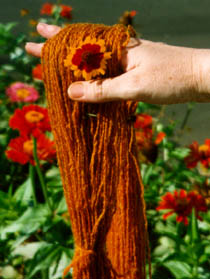
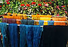
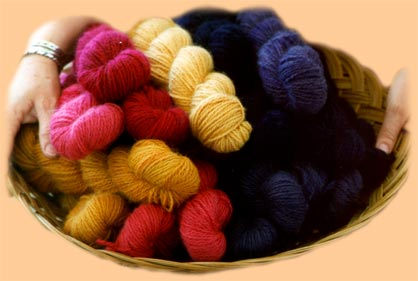
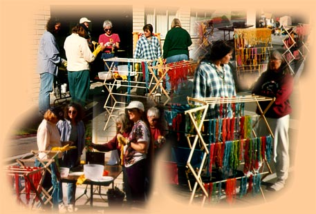

|

Natural Dyeing
 In my search to find just the right red for my designs - what I call
Navajo Red - I realized that I was going to have to make it myself.
This was the beginning of my adventure with natural dyes.
In my search to find just the right red for my designs - what I call
Navajo Red - I realized that I was going to have to make it myself.
This was the beginning of my adventure with natural dyes.
In October of 1993 I went to the Taos Wool Festival for the first time
and bought my first natural dyes; Coreopsis and Madder. It took me a full
year and a lot of reading before I got up enough nerve to try them. The
first time I put wool into a bath of natural dye I felt like I had come
home. I became an alchemist! It was a wonderful feeling that I continue
to experience each and every time I dye.
A natural progression was to grow my own dye plants. Spring 1996 saw
us digging up the parkway in front of our house in San Diego - the only
available
land at our disposal. We planted Coreopsis, Cosmos, Zinnia, Marigolds,
Dahlias and Tansy. It was huge success. I called it my Urban
Beautification Project. It was a real joy to be out picking flowers and
have neighbors walk by and stop and admire. It was fun trying to explain
to them what the flowers were for.
It was quite an educational process for me as well as them!
In September of 2000 we moved to New Mexico. The first thing I did the first Spring we were here was plant a dyer's garden. I am also having great fun experimenting with all the wonderful dye plants that grow in this area: Cota, Mullein, Sage, Snakeweed, Chamisa, and Sunflowers, just to name a few. I use these flowers in my natural dye workshop
and find I can't look at any plant without wondering what color, if any,
I could get from it! I'm hooked!
Why Use Natural Dyes?

I feel the colors obtained from natural dyes have a harmonic - a resonance -
a depth that commercial dyes lack.
Commercial colors are almost too perfect. The "imperfections" in the colors
produced with natural dyes creates a depth that is wonderful. Light plays off
the colors with an energy that only comes from nature. To me the colors sing!
Of course natural dyes are just one more element that brings one closer to
Mother Earth.
Hand Dyed Wool

Here is just a small sampling of the colors available with natural dyes.
I now knit exclusively with naturally dyed yarn in all of my designs.
Natural Dyeing Workshops
I have started to share all this information that I have been learning about
using natural dyes. This has naturally led to a series of workshops to teach
others how to dye their own wool! If you are interested in having me teach
an Introduction to Natural Dyeing class to your group, contact me at
katy@urbaneagle.com.

From a workshop I gave in 1997.
We had so much fun in this dye workshop that if there were any dye left in
the baths we would be there still! We dyed yarn using Indigo, Cutch,
Marigolds (from my dyer's garden), Cochineal, Brazilwood and Osage Orange
and with over dyeing and an ammonia dip, were able to come up with an
amazing array of colors.
Natural Dyeing Resource Booklist
Here is a list of the books I have found
that have information and formulas on the natural dyeing processes.
|